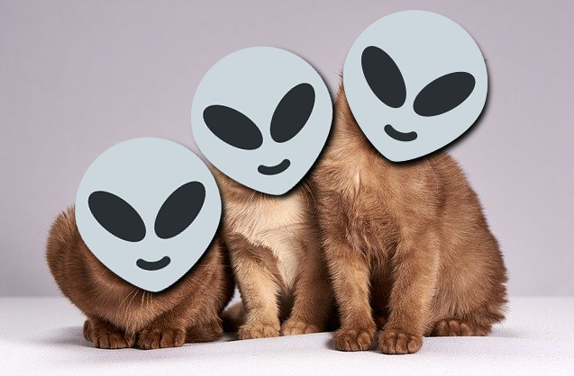

CUTE
강아지
고양이
외계인
고양이는 말이다...

고양이는 귀엽다.
여유로운 모습이 최고다. 발도 최고고... 심지어는 공중에 날아다니는 털조차 귀엽다.
고양이
[명사]
동물 고양잇과의 하나. 원래 아프리카의 어쩌구 저쩌구.
[북한어]숨바꼭질에서 숨은 쪽을 찾는 아이.
[북한어]남에게 손해를 주면서 자기 잇속을 어쩌구.
음...아...예...그렇군요...